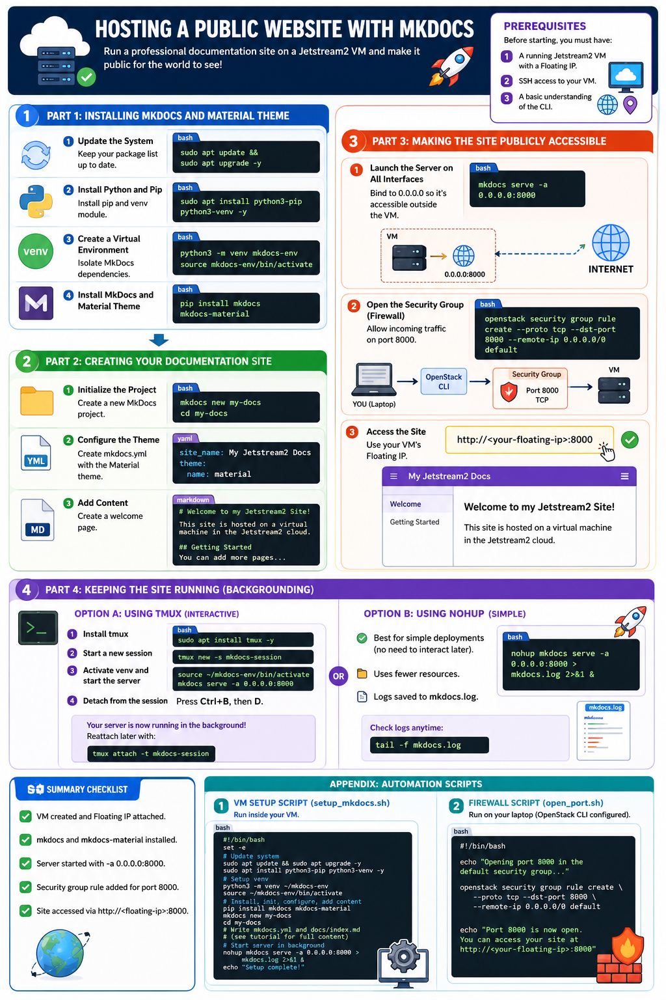

Hosting a Public Website with MkDocs
This tutorial guides you through the process of setting up an MkDocs server on a Jetstream2 virtual machine. By the end of this guide, you will have a professional-looking documentation site that is accessible to anyone on the public internet.
Prerequisites
Before starting, you must have:
- A running Jetstream2 VM with a Floating IP.
- SSH access to your VM.
- A basic understanding of the CLI (see Jetstream2 Quick Start Guide).
Part 1: Installing MkDocs and Material Theme
We will use the Material for MkDocs theme, as it is the industry standard for beautiful, responsive documentation.
1. Update the System
Log into your VM and ensure your package list is up to date:
2. Install Python and Pip
Most Jetstream2 Ubuntu images come with Python. Install pip and the venv module:
3. Create a Virtual Environment
To keep your system clean, install MkDocs inside a virtual environment:
4. Install MkDocs and Material Theme
Part 2: Creating Your Documentation Site
1. Initialize the Project
Create a new MkDocs project named my-docs:
2. Configure the Theme
Instead of manually editing the file, you can use this command to create the mkdocs.yml configuration file with the Material theme enabled:
3. Add Content
Create a simple welcome page in docs/index.md:
cat <<EOF > docs/index.md
# Welcome to my Jetstream2 Site!
This site is hosted on a virtual machine in the Jetstream2 cloud.
## Getting Started
You can add more pages to this documentation by creating new \`.md\` files in the \`docs/\` directory and listing them in the \`mkdocs.yml\` file.
EOF
Part 3: Making the Site Publicly Accessible
By default, mkdocs serve only listens on localhost (127.0.0.1), meaning it is only visible inside the VM. To make it public, we must change the binding and open the cloud firewall.
1. Launch the Server on all Interfaces
Run the server using the -a (address) flag to bind to 0.0.0.0 (all interfaces) on port 8000:
2. Open the Security Group (Firewall)
While the server is running, you must tell Jetstream2 to allow incoming traffic on port 8000. Open a new terminal window on your laptop (do not stop the server) and run:
3. Access the Site
You can now view your website from any browser using your VM's Floating IP:
http://<your-floating-ip>:8000
Part 4: Keeping the Site Running (Backgrounding)
If you close your SSH terminal, the mkdocs serve process will stop, and your website will go offline. To keep it running in the background, use a tool like tmux or nohup.
Option A: Using tmux
tmux allows you to start a session, disconnect from it, and reconnect later. This is ideal when you want to interactively manage your server, view the live logs in real-time, or run multiple commands in the same session.
- Install tmux:
- Start a new session:
- Activate venv and start the server:
- Detach from the session:
Press
Ctrl+B, then let go and pressD.
Your server is now running in the background! You can close your terminal. To return to the session later, run:
Option B: Using nohup (Recommended for simple deployments)
If you only need the server to run and don't need to interact with the terminal session again, nohup (no hang up) is better because it is simpler, uses fewer resources, and doesn't require managing session IDs.
mkdocs.log. You can check the logs at any time using tail -f mkdocs.log.
Summary Checklist
- [ ] VM created and Floating IP attached.
- [ ]
mkdocsandmkdocs-materialinstalled. - [ ] Server started with
-a 0.0.0.0:8000. - [ ] Security group rule added for port
8000. - [ ] Site accessed via
http://<floating-ip>:8000.

{kind=link}
Appendix: Automation Scripts
If you prefer to automate the setup, you can use the following scripts to deploy your site quickly.
1. VM Setup Script (setup_mkdocs.sh)
Run this script inside your virtual machine to handle the installation, configuration, and launching of the server.
cat <<'EOF' > setup_mkdocs.sh
#!/bin/bash
set -e
echo "Updating system..."
sudo apt update && sudo apt upgrade -y
sudo apt install python3-pip python3-venv -y
echo "Setting up virtual environment..."
python3 -m venv ~/mkdocs-env
source ~/mkdocs-env/bin/activate
echo "Installing MkDocs and Material theme..."
pip install mkdocs mkdocs-material
echo "Initializing project..."
mkdocs new my-docs
cd my-docs
echo "Configuring mkdocs.yml..."
cat <<EOF > mkdocs.yml
site_name: My Class Docs
theme:
name: material
EOF
echo "Creating index page..."
cat <<EOF > docs/index.md
# Welcome to my Class Site!
This site is hosted on a virtual machine in the Jetstream2 cloud.
## Getting Started
You can add more pages to this documentation by creating new .md files in the docs/ directory and listing them in the mkdocs.yml file.
EOF
echo "Starting server in background..."
# We use nohup to keep the server running after we exit
nohup mkdocs serve -a 0.0.0.0:8000 > mkdocs.log 2>&1 &
echo "----------------------------------------------------------------"
echo "Setup complete! Your site is being launched on port 8000."
echo "Remember to open port 8000 in your security group to view the site."
echo "----------------------------------------------------------------"
EOF
chmod +x setup_mkdocs.sh
./setup_mkdocs.sh
2. Firewall Script (open_port.sh)
Run this script on your laptop/local machine where your OpenStack CLI is configured.
cat <<EOF > open_port.sh
#!/bin/bash
echo "Opening port 8000 in the default security group..."
openstack security group rule create --proto tcp --dst-port 8000 --remote-ip 0.0.0.0/0 default
echo "Port 8000 is now open. You can access your site at http://<your-floating-ip>:8000"
EOF
chmod +x open_port.sh
./open_port.sh